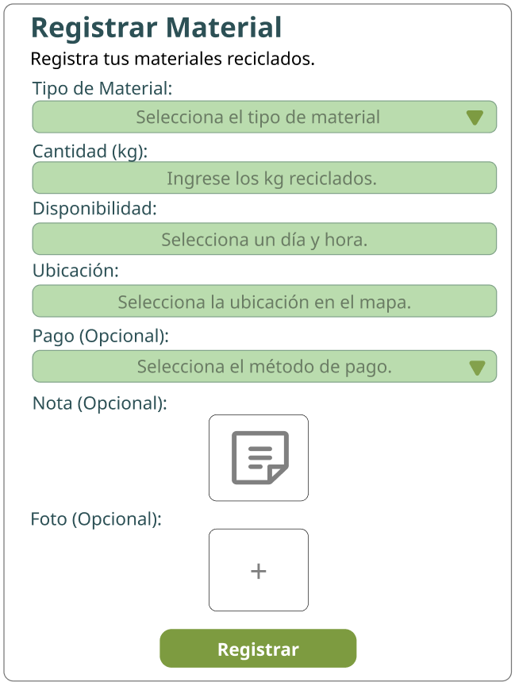
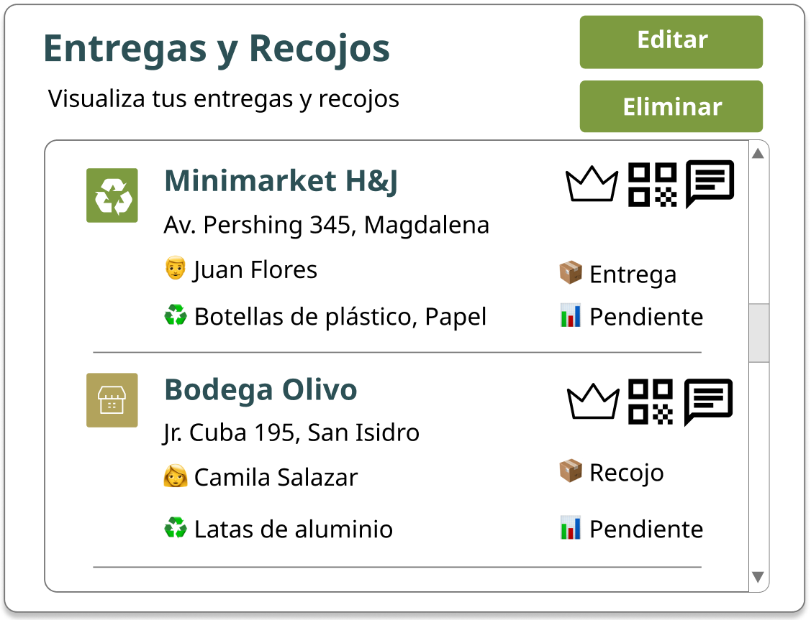

Mensaje de error
Registro de material reciclable
Empieza a darle una segunda vida a tus materiales reciclables.
Aquí podrás registrar de manera sencilla el tipo de material que deseas entregar, la cantidad disponible y la fecha (no permite fechas pasadas a la actual) en la que puede ser recogido.
Además, tienes la opción de añadir una nota con detalles importantes y subir una foto opcional para que el recolector tenga una referencia clara. El sistema también puede sugerir automáticamente la categoría del material según lo que escribas (como plástico, papel, vidrio o metal), facilitando el proceso y ayudándote a evitar errores.
Cuando tengas todo listo, solo presiona “Registrar” y tu publicación estará lista para ser revisada y coordinada. ¡Así aportas al cambio de manera rápida y práctica! ♻️✨

Validación de información registrada
Antes de completar el registro, el sistema revisa los datos ingresados. Si todo está correcto, se mostrará una confirmación; si no, aparecerán advertencias para completar o ajustar la información pendiente.
Mensaje de confirmación
Historial de entregas
y recojos
Para validar que la entrega se realizó correctamente, el otro usuario puede escanear el código QR generado por la app. QhuriNet verificará los datos del recojo y actualizará el estado de la solicitud en tiempo real, dejando registro en tu historial.
